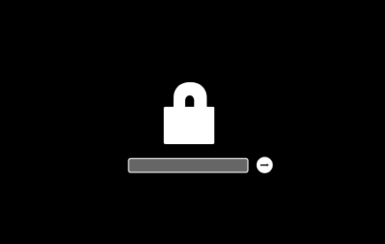

Utilisation d'un mot de passe de firmware sur macOS par mesure de sécurité
But de l'activation d'un mot de passe de firmware sur OS X
Les systèmes qui exécutent OS X peuvent déployer un mot de passe pour verrouiller les paramètres du firmware du système d'exploitation et empêcher toute modification involontaire du firmware situé dans un système particulier.
Le mot de passe du firmware est recommandé pour empêcher les adversaires motivés de démarrer à partir d'un volume système, d'un périphérique de stockage interne ou externe différent de celui du disque de démarrage initial que vous avez choisi.
Notamment, l'utilisation d'un mot de passe de firmware empêche le déploiement des clés de verrouillage pour modifier la cascade du processus de démarrage. Par conséquent, un mot de passe de firmware empêche les utilisateurs qui ne possèdent pas le mot de passe de démarrer à partir d'un disque autre que le disque de démarrage que vous avez choisi, ce qui empêche également la capacité de déployer la majorité des combinaisons de clés de démarrage.
De plus, le mot de passe du firmware est déployé pour empêcher l'accès direct à la mémoire (DMA) via des interfaces comme FireWire. Rappelez-vous que le mode disque cible insiste sur le DMA dont le mot de passe du firmware empêche également son utilisation sur un système. Si un adversaire tente de monter un volume à partir d'un autre ordinateur qui déploie le mode Target Disk, le mot de passe du firmaware doit être entré avant de monter le volume à partir de l'ordinateur de la cible.
Comment définir un mot de passe de firmware sur un système OS X
- Démarrez dans le système de récupération intégré de macOS en maintenant la touche Commande (⌘)-R enfoncée immédiatement après avoir allumé votre Mac via le bouton d'alimentation.
- La fenêtre des utilitaires de récupération de macOS apparaîtra. Dans la barre de menu, cliquez sur Utilitaires > ; Firmware Password Utility.
- Cliquez “Turn On Firmware Password.”
- Entrez un mot de passe de firmware fort et complexe. Utilisez une combinaison de mots, de symboles et de lettres. Cliquez sur "Set Password". Mémorisez ce mot de passe
- Vous pouvez maintenant quitter l'utilitaire Firmware Password. Redémarrez votre Mac en cliquant sur le menu () menu > ; Redémarrer
Comment savoir si le mot de passe du firmware fonctionne comme prévu sur OS X
Le système OS X demandera le mot de passe du firmware lorsque l'utilisateur tente de démarrer à partir d'un périphérique de stockage autre que celui choisi dans les préférences du disque de démarrage ou lors du démarrage à partir de MacOS Recovery.
Vous verrez quelque chose comme ça :
